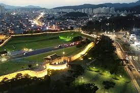
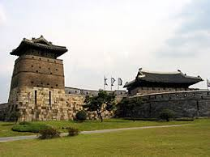
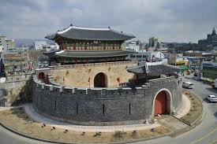
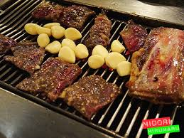
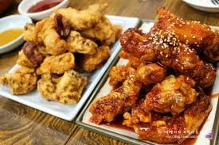
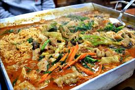

HOME
RESUME
UNIVERSITY
Project One
My CITY : SUWON

Suwon
- One of the cities of South Korea
- The political, administrative and economic centers of Gyeonggi-do
- A major railway city
- It has many cultural heritages and food
Suwon's History
The name of the city of Suwon means'waterbees' in old Korean. Hwaseong is a new city built by King Jeongjo of the Joseon Dynasty. He changed the name of the water source to'Hwasong’,suggesting the direction of the new city.
Suwon HwaseongFortress


- It is a huge castle with a circumference of 5,744 meters and a height of 6 meters.
- Hwaseong Fortress in Suwon was designed and built by Jeong Yak-yong.
- Hwaseong in Suwon was registered as a UNESCO World Heritage site in 1997.
Suwon's famous food
- Suwon Rib
- Suwon Chicken
- Suwon Sundae


